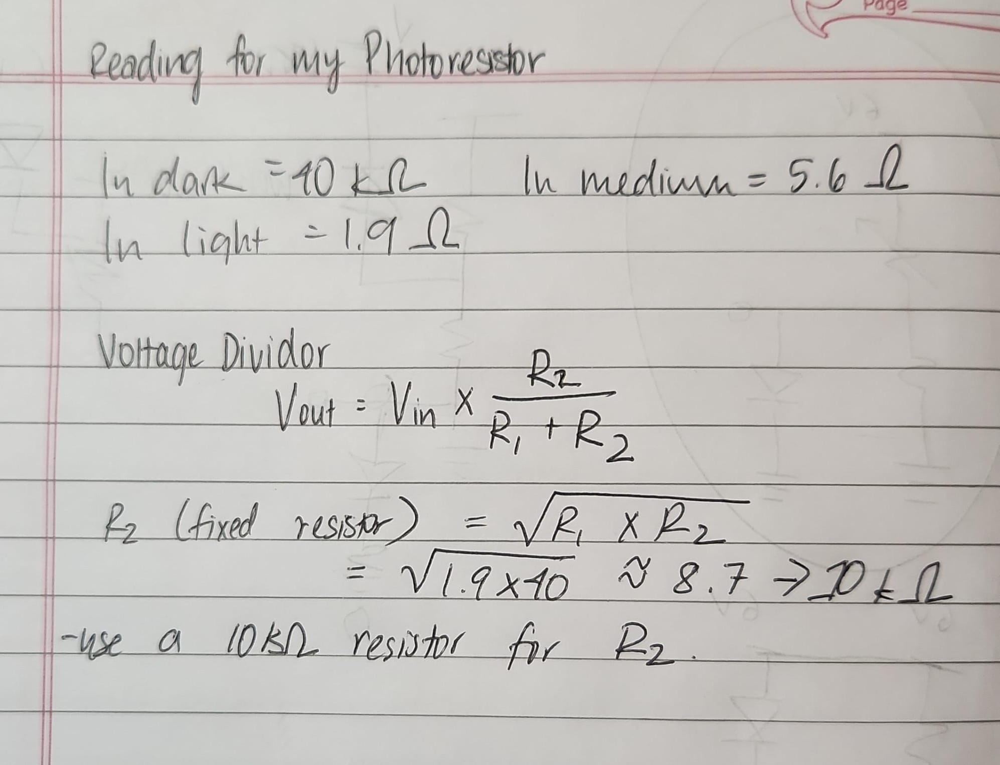
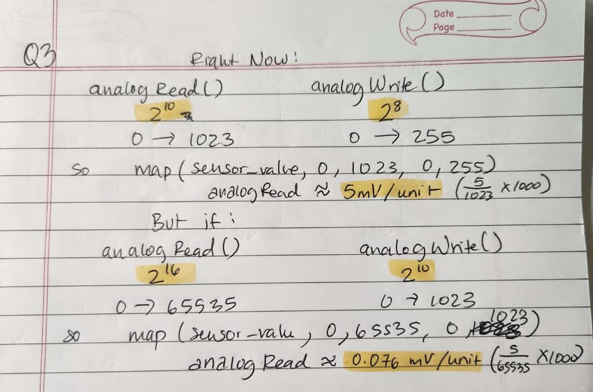

Assignment 4: Libraries!
Firmware-Code from Arduino IDE
//librairies
#include // adding the library for the capactive sensor
#include // adding the library for the servo motor
//objects
CapacitiveSensor cs_4_2 = CapacitiveSensor(4,2); // the capacitive sensor object using pin 4 and pin 2, for sending and recieving respectively.
Servo myservo; // the servo object to move the fan motor
long totalTouch = 0; // variable that stores the touch amount
int pos = 0; // variable that stores the angle
void setup() {
cs_4_2.set_CS_AutocaL_Millis(0xFFFFFFFF); // turns off the automatic calibration, taken from example
Serial.begin(9600); // to start the serial monitor
myservo.attach(9); // attaching the servo on to pin 9 of the myservo object
}
void loop() {
totalTouch = cs_4_2.capacitiveSensor(30); // RC timing test 30 times to get a smooth reading
// printing the reading to the Serial Monitor
Serial.print("CapSense Value: ");
Serial.println(totalTouch);
pos = map(totalTouch, 0, 2000, 0, 180); // mapping the touch value to a servo angle (tough to angle between 0-180)
pos = constrain(pos, 0, 180); // making sure that if there is a higher or lower touch value, it doesn't go out of bound
myservo.write(pos); // writing and moving the servo to the angle
delay(15); // pause in between
}
Additional Questions
Question 1
Yes in the voltage divider, the variable resistor can be either R1 or R2. The only difference is that it changes the relationship
between the light and the voltage. If R1 is the variable resistor, then the output voltage becomes higher in light and lower
in the dark. If R2 is the variable resistor, then the output voltage becomes lower in light and higher in the dark.

Question 2
This is the graph of the gif when i cover my sensor and the green LED dims.

Question 3
Essentially the mV per unit rate would become smaller, which means the sensor becomes more sensitive to the light. Even
the slightes change in light would cause a change in the voltage output. Here is the calculations for calculating the analogRead rate
